Capítulo 5 Aplicaciones de la simulación en Inferencia Estadística
5.1 Aplicaciones de la simulación
Aplicaciones:
Estadística: Muestreo, aproximación de distribuciones, remuestreo,…
Optimización: Algoritmos genéticos, …
Análisis numérico: Evaluación de expresiones, …
…
En este capítulo nos centraremos en algunas de las aplicaciones en inferencia estadística, aunque habría muchas:
Distribución de estimadores puntuales/estadísticos:
Aproximación de la distribución.
Aproximación de características de la distribución.
Valided de la distribución asintótica.
Comparación de estimadores.
Estimación por intervalo de confianza:
Obtención de intervalos/bandas de confianza (probabilidad).
Análisis de un estimador por intervalo de confianza.
Contrastes de hipótesis:
Aproximación del \(p\)-valor.
Análisis de un contraste de hipótesis.
Validación teoría.
Métodos de remuestro bootstrap.
Inferencia Bayesiana
…
En el siguiente capítulo trararemos la Integración y Optimización Monte Carlo…
5.2 Distribución en el muestreo
Si \(X_{1},\ldots,X_{n}\) es una muestra aleatoria simple de una variable aleatoria \(X\) \(\in\) \(N\left( \mu, \sigma \right),\) la distribución en el muestreo de: \[\hat{\mu}=\overline{X}=\dfrac{1}{n}\sum_{i=1}^{n}X_{i}\] es: \[\overline{X}\in N\left( \mu,\dfrac{\sigma}{\sqrt{n}}\right)\] Confirmar este resultado mediante simulación, para ello:
- Crear un conjunto de datos
muestrascon 500 muestras de tamaño \(n=10\) de una \(N(1,2)\). Añadir al conjunto de datos las estimaciones de la media y desviación típica obtenidas con cada una de las muestras.
Valores iniciales:
set.seed(54321) # Fijar semilla para reproductibilidad
nsim <- 500
nx <- 10Valores teóricos:
mux <- 1
sdx <- 2Simulación de las muestras (al estilo Rcmdr):
muestras <- as.data.frame(matrix(rnorm(nsim*nx, mean=mux, sd=sdx), ncol=nx))
rownames(muestras) <- paste("muestra", 1:nsim, sep="")
colnames(muestras) <- paste("obs", 1:nx, sep="")
str(muestras)## 'data.frame': 500 obs. of 10 variables:
## $ obs1 : num 0.642 -0.856 -0.568 -2.301 0.184 ...
## $ obs2 : num 3.483 2.216 1.1 4.305 0.677 ...
## $ obs3 : num 1.24 -1.51 -3.98 2.29 2.46 ...
## $ obs4 : num 3.286 0.947 0.953 -1.663 2.623 ...
## $ obs5 : num 3.77 -1.34 1.61 -2.46 1.11 ...
## $ obs6 : num -2.044 0.32 3.046 0.136 3.555 ...
## $ obs7 : num 0.6186 -1.8614 4.3386 0.0996 0.8334 ...
## $ obs8 : num -0.829 2.202 -1.688 1.534 -0.114 ...
## $ obs9 : num 0.4904 -0.6713 0.5451 -0.6517 0.0168 ...
## $ obs10: num 2.79 2.84 1.27 3.93 2.17 ...Estimaciones
muestras$mean <- rowMeans(muestras[,1:nx])
muestras$sd <- apply(muestras[,1:nx], 1, sd)muestras[i,] contiene las observaciones de la i-ésima muestra y la correspondiente media y desv. tip.
muestras[1,]## obs1 obs2 obs3 obs4 obs5 obs6 obs7
## muestra1 0.6421985 3.482661 1.242483 3.28559 3.766896 -2.04443 0.6186323
## obs8 obs9 obs10 mean sd
## muestra1 -0.8293636 0.4903819 2.790091 1.344514 1.951292- Generar el histograma (en escala de densidades) de las medias muestrales y compararlo con la densidad teórica.
Distribución de la media muestral:
hist(muestras$mean, freq=FALSE, breaks="FD",
main="Distribución de la media muestral", xlab="Medias", ylab="Densidad")
# Densidad observada (estimación)
lines(density(muestras$mean))
# Densidad teórica (bajo normalidad)
curve(dnorm(x,mux,sdx/sqrt(nx)), lwd=2, col="blue", add=TRUE)
# Aproximación del valor esperado de la media muestral mediante simulación
abline(v=mean(muestras$mean),lty=2)
# Valor esperado de la media muestral (teórico)
abline(v=mux, col="blue")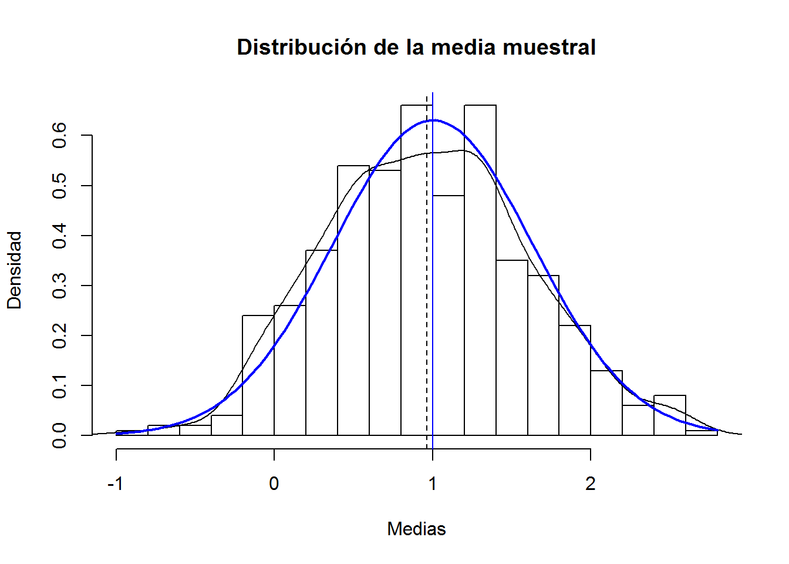
Si \(X_{1},\ldots,X_{n}\) es una m.a.s. de una variable aleatoria \(X\) (cualquiera) con \(E\left( X \right) = \mu\) y \(Var\left( X \right) = \sigma^{2}\), por el Teorema Central del Límite, la distribución en el muestreo de \(\hat{\mu}=\overline{X}\) se aproxima a la normalidad: \[\overline{X}\underset{n\rightarrow\infty}{\longrightarrow} N\left( \mu, \dfrac{\sigma}{\sqrt{n}}\right)\] Típicamente se suele considerar que esta aproximación es buena para tamaños muestrales \(n>30\), aunque dependerá de las características de la distribución de \(X\).
- Repetir el ejercicio anterior considerando muestras de una \(Exp(1)\) (tener en cuenta que \(X\in Exp(\lambda)\Rightarrow\mu_{X}=\sigma_{X}=1/\lambda\)). ¿Qué ocurre con la distribución de la media muestral?
set.seed(54321) # Fijar semilla para reproductibilidad
nsim <- 500
nx <- 10
# nx <- 50Valores teóricos:
lambda <- 1
muexp <- 1/lambda
sdexp <- muexpSimulación de las muestras:
muestras2 <- as.data.frame(matrix(rexp(nsim*nx, rate=lambda), ncol=nx))
rownames(muestras2) <- paste("muestra", 1:nsim, sep="")
colnames(muestras2) <- paste("obs", 1:nx, sep="")Estimaciones:
muestras2$mean <- rowMeans(muestras2[,1:nx])
muestras2$sd <- apply(muestras2[,1:nx], 1, sd)Distribución de la media muestral:
hist(muestras2$mean, xlim = c(-0.1, 2.5), freq=FALSE, breaks="FD",
main="Distribución de la media muestral", xlab="Medias", ylab="Densidad")
# Densidad observada (estimación)
lines(density(muestras2$mean))
# Distribución asintótica (TCL)
curve(dnorm(x,muexp,sdexp/sqrt(nx)), lwd=2, col="blue", add=TRUE)
# Aproximación del valor esperado de la media muestral mediante simulación
abline(v=mean(muestras2$mean),lty=2)
# Valor esperado de la media muestral (teórico)
abline(v=muexp, col="blue")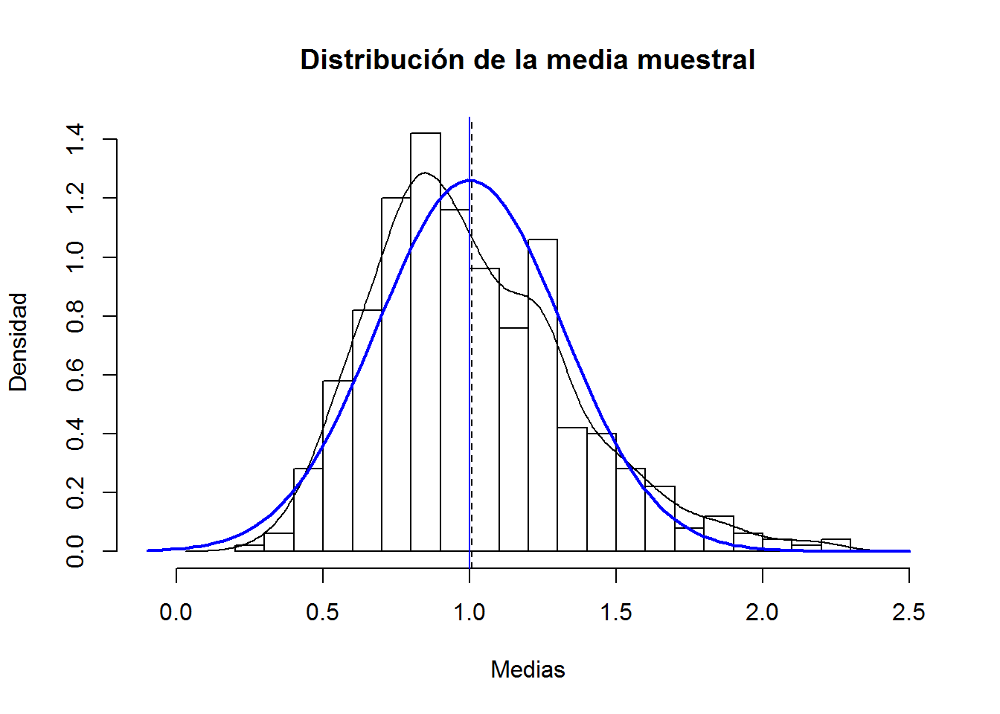
- Aumentar el tamaño muestral a 50. ¿Se aproxima más la distribución de las medias muestrales a la teórica bajo normalidad?
Ejecutar el código del apartado anterior fijando nx <- 50.
5.3 Intervalos de confianza
Siguiendo el enunciado del ejercicio 1, se deduce que el intervalo de confianza (de nivel \(1-\alpha\)) para la media \(\mu\) de una población normal con varianza conocida es: \[IC_{1-\alpha}\left( \mu\right) = \left( \overline{X}-z_{1-\alpha/2}\dfrac{\sigma}{\sqrt{n}},\ \overline{X} + z_{1-\alpha/2}\dfrac{\sigma}{\sqrt{n}} \right).\] La idea es que el \(100(1-\alpha)\%\) de los intervalos así construidos contentrán el verdadero valor del parámetro.
- Utilizando el conjunto de datos
muestrasdel ejercicio 1 (500 muestras de tamaño \(n=10\) de una \(N(1,2)\)), añadir en dos nuevas variables los extremos del intervalo de confianza para la media con varianza conocida al conjunto de datos. Analizar la cobertura de estas estimaciones por IC.
IC para la media con varianza conocida (bajo normalidad)
alfa <- 0.05
z <- qnorm(1 - alfa/2)
muestras$ici <- muestras$mean - z*sdx/sqrt(nx)
muestras$ics <- muestras$mean + z*sdx/sqrt(nx)Cobertura de las estimaciones por IC:
muestras$cob <- (muestras$ici < mux) & (mux < muestras$ics)
ncob <- sum(muestras$cob) # Nº de intervalos que contienen la verdadera media
ncob## [1] 480100*ncob/nsim # Proporción de intervalos## [1] 96100*(1 - alfa) # Proporción teórica bajo normalidad## [1] 95Solo como ejemplo ilustrativo: Gráfico de los primeros 50 intervalos:
m <- 50
tmp <- muestras[1:m,]
attach(tmp)
color <- ifelse(cob,"blue","red")
plot(1:m, mean, col = color, ylim = c(min(ici),max(ics)),
main = "Cobertura de las estimaciones por IC", xlab = "Muestra", ylab = "IC")
arrows(1:m, ici, 1:m, ics, angle = 90, length = 0.05, code = 3, col = color)
abline(h = mux, lty = 3)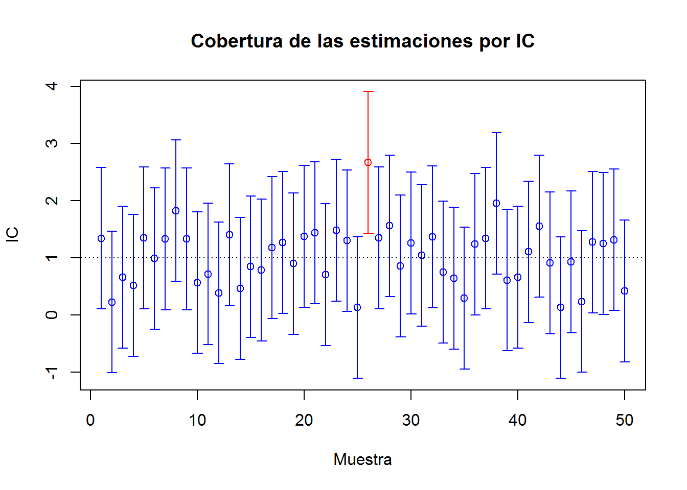
detach(tmp)- Repetir el apartado anterior considerando muestras de una \(Exp(1)\). ¿Qué ocurre con la cobertura del intervalo de confianza obtenido bajo normalidad?
Ejecutar el código del apartado a) del ejercicio 2.
IC para la media con varianza conocida (bajo normalidad)
alfa <- 0.05
z <- qnorm(1 - alfa/2)
muestras2$ici <- muestras2$mean - z*sdexp/sqrt(nx)
muestras2$ics <- muestras2$mean + z*sdexp/sqrt(nx)Cobertura de las estimaciones por IC:
muestras2$cob <- (muestras2$ici < muexp) & (muexp < muestras2$ics)
ncob <- sum(muestras2$cob) # Nº de intervalos que contienen la verdadera media
ncob## [1] 469100*ncob/nsim # Proporción de intervalos## [1] 93.8100*(1 - alfa) # Proporción teórica bajo normalidad## [1] 95Solo como ejemplo ilustrativo: Gráfico de los primeros 100 intervalos:
m <- 100
tmp <- muestras2[1:m,]
attach(tmp)
color <- ifelse(cob,"blue","red")
plot(1:m, mean, col = color, ylim = c(min(ici),max(ics)),
main = "Cobertura de las estimaciones por IC", xlab = "Muestra", ylab = "IC")
arrows(1:m, ici, 1:m, ics, angle = 90, length = 0.05, code = 3, col = color)
abline(h = muexp, lty = 3)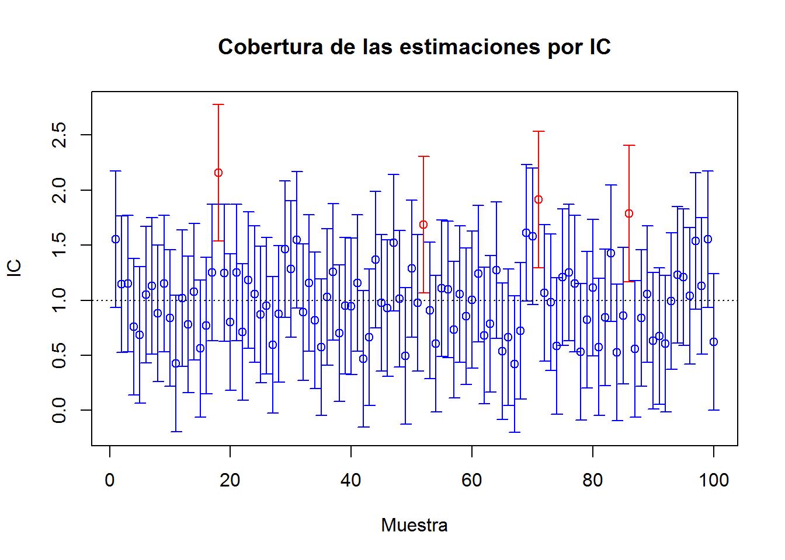
detach(tmp)- ¿Qué ocurre si aumentamos el tamaño muestral a 50?
Ejecutar el código del ejercicio anterior fijando nx <- 50 y el del apartado anterior.
En los apartadps b) y c) podíamos considerar bootstrap descrito al final de este capítulo.
Podemos aproximar por simulación los intervalos de probabilidad de la media muestral (tendríamos una idea del valor esperado de lo que obtendríamos con el bootstrap percentil; en este caso el estimador es insesgado…):
# Distribución de la media muestral
hist(muestras2$mean, freq=FALSE, breaks="FD",
main="Distribución de la media muestral", xlab="Medias", ylab="Densidad")
# Densidad observada (estimación)
lines(density(muestras2$mean), lwd=2, col='red')
# Densidad teórica (bajo normalidad)
curve(dnorm(x,muexp,sdexp/sqrt(nx)), col="blue", add=TRUE)
# Aproximación por simulación del valor esperado de la media muestral
abline(v=mean(muestras2$mean), lty=2)
# Valor esperado de la media muestral (teórico)
abline(v=muexp, col="blue")
# IP bajo normalidad
ic.aprox <- apply(muestras2[ ,c('ici','ics')], 2, mean)
## ic.aprox
## ici ics
## 0.3865199 1.6261099
# Intervalo de probabilidad para la media muestral aproximado bajo normalidad
abline(v = ic.aprox, col='blue')
# Intervalo de probabilidad para la media muestral (aproximado por simulación)
ic.sim <- quantile(muestras2$mean, c(alfa/2, 1 - alfa/2))
## ic.sim
## 2.5% 97.5%
## 0.4714233 1.8059094
# IP (aprox.)
abline(v=ic.sim, lty=2, col='red') 
t.test.
El Intervalo de confianza para una proporción construido usando la aproximación normal tiene un mal comportamiento cuando el tamaño de la muestra es pequeño. Una simple y efectiva mejora consiste en añadir a la muestra \(2a\) elementos, \(a\) exitos y \(a\) fracasos. Así el intervalo de confianza al \(\left( 1-\alpha\right) 100\%\) para una proporción mejorado es: \[\begin{aligned} IC_{1-\alpha}^{a}\left( p\right) & =\left( \tilde{p}-z_{1-\alpha/2}\sqrt{\frac{\tilde{p}(1-\tilde{p})}{\tilde{n}}} \text{ , } \tilde{p}+z_{1-\alpha/2}\sqrt{\frac{\tilde{p}(1-\tilde{p})}{\tilde{n}}}\right) ,\\ \text{siendo }\tilde{n} & = n+2a \text{, } \tilde{p} = \frac{np+a}{\tilde{n}}. \end{aligned}\] En el caso de \(a=2\) se denomina IC Agresti-Coull.
- Teniendo en cuenta que la v.a. \(X=n\hat{p}\sim\mathcal{B}(n,p)\), obtener y representar gráficamente la cobertura teórica del intervalo de confianza estándar (\(a=0\)) de una proporción para una muestra de tamaño \(n=30\), \(\alpha=0.05\) y distintos valores de \(p\) (
p.teor <- seq(1/n, 1 - 1/n, length = 1000)).
Parámetros:
n <- 30
alpha <- 0.05
adj <- 0 # (adj <- 2 para Agresti-Coull)Probabilidades teóricas:
m <- 1000
p.teor <- seq(1/n, 1 - 1/n, length = m) Posibles resultados:
x <- 0:n
p.est <- (x + adj)/(n + 2 * adj)
ic.err <- qnorm(1 - alpha/2) * sqrt(p.est * (1 - p.est)/(n + 2 * adj))
lcl <- p.est - ic.err
ucl <- p.est + ic.err Recorrer prob. teóricas:
p.cov <- numeric(m)
for (i in 1:m) {
# cobertura de los posibles intervalos
cover <- (p.teor[i] >= lcl) & (p.teor[i] <= ucl)
# prob. de los posibles intervalos
p.rel <- dbinom(x[cover], n, p.teor[i])
# prob. total de cobertura
p.cov[i] <- sum(p.rel)
}Gráfico coberturas:
plot(p.teor, p.cov, type = "l", ylim = c(1 - 4 * alpha, 1))
abline(h = 1 - alpha, lty = 2) 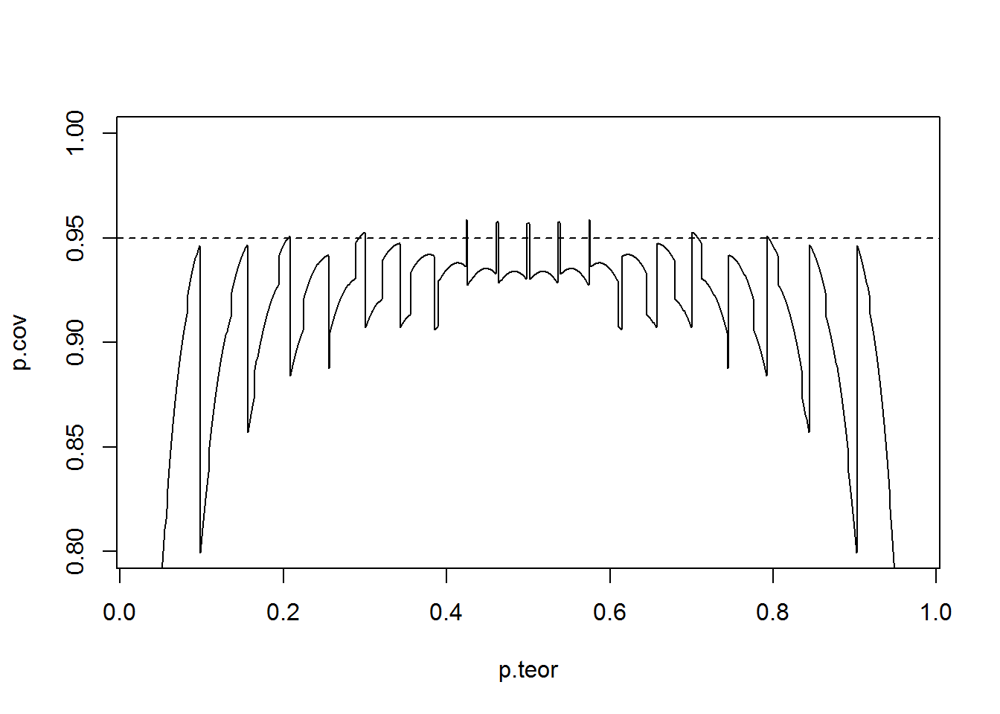 Fuente Suess y Trumbo (2010).
- Repetir el apartado anterior considerando intervalos de confianza Agresti-Coull (\(a=2\)).
Parámetros:
n <- 30
alpha <- 0.05
adj <- 2 # Agresti-Coull
# Probabilidades teóricas:
m <- 1000
p.teor <- seq(1/n, 1 - 1/n, length = m)
# Posibles resultados:
x <- 0:n
p.est <- (x + adj)/(n + 2 * adj)
ic.err <- qnorm(1 - alpha/2) * sqrt(p.est * (1 - p.est)/(n + 2 * adj))
lcl <- p.est - ic.err
ucl <- p.est + ic.err
# Recorrer prob. teóricas:
p.cov <- numeric(m)
for (i in 1:m) {
# cobertura de los posibles intervalos
cover <- (p.teor[i] >= lcl) & (p.teor[i] <= ucl)
# prob. de los posibles intervalos
p.rel <- dbinom(x[cover], n, p.teor[i])
# prob. total de cobertura
p.cov[i] <- sum(p.rel)
}
# Gráfico coberturas:
plot(p.teor, p.cov, type = "l", ylim = c(1 - 4 * alpha, 1))
abline(h = 1 - alpha, lty = 2) 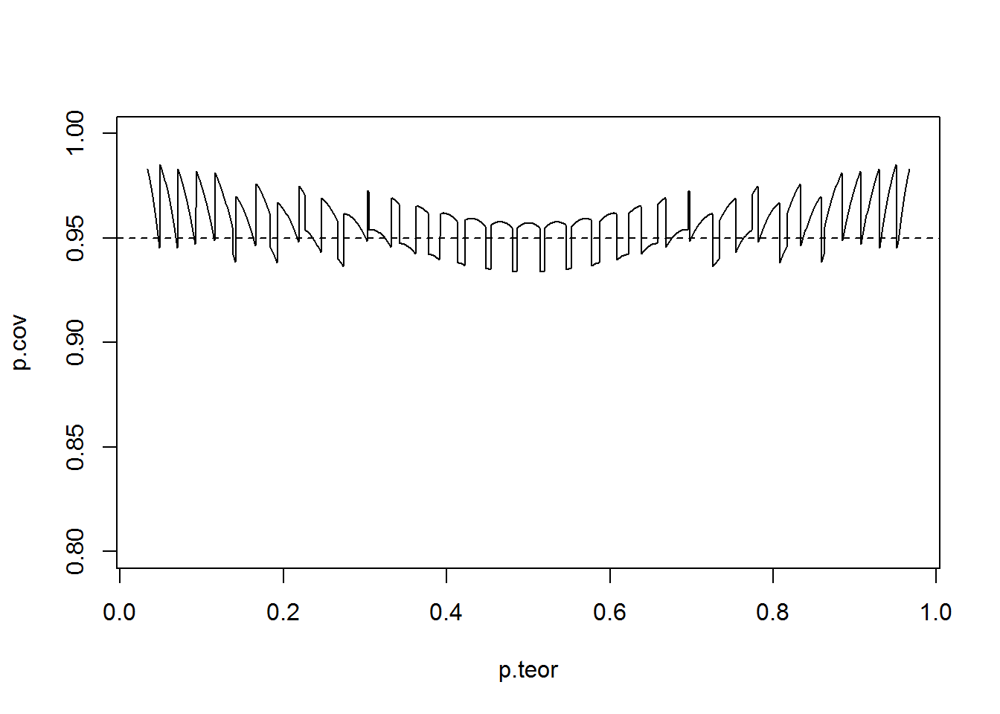
- Repetir el apartado anterior empleando simulación para aproximar la cobertura.
Parámetros:
n <- 30
alpha <- 0.05
adj <- 2 #' (2 para Agresti-Coull)
set.seed(54321)
nsim <- 500
# Probabilidades teóricas:
m <- 1000
p.teor <- seq(1/n, 1 - 1/n, length = m) Recorrer prob. teóricas:
# m <- length(p.teor)
p.cov <- numeric(m)
for (i in 1:m) {
# Equivalente a simular nsim muestras de tamaño n
# ry <- matrix(rbinom(n*nsim, 1, p.teor[i]), ncol=n)
# rx <- apply(ry, 1, sum)
rx <- rbinom(nsim, n, p.teor[i])
p.est <- (rx + adj)/(n + 2 * adj)
ic.err <- qnorm(1 - alpha/2) * sqrt(p.est * (1 - p.est)/(n + 2 * adj))
p.cov[i] <- mean( abs(p.est - p.teor[i]) < ic.err )
}Representar:
plot(p.teor, p.cov, type = "l", ylim = c(1 - 4 * alpha, 1))
abline(h = 1 - alpha, lty = 2) 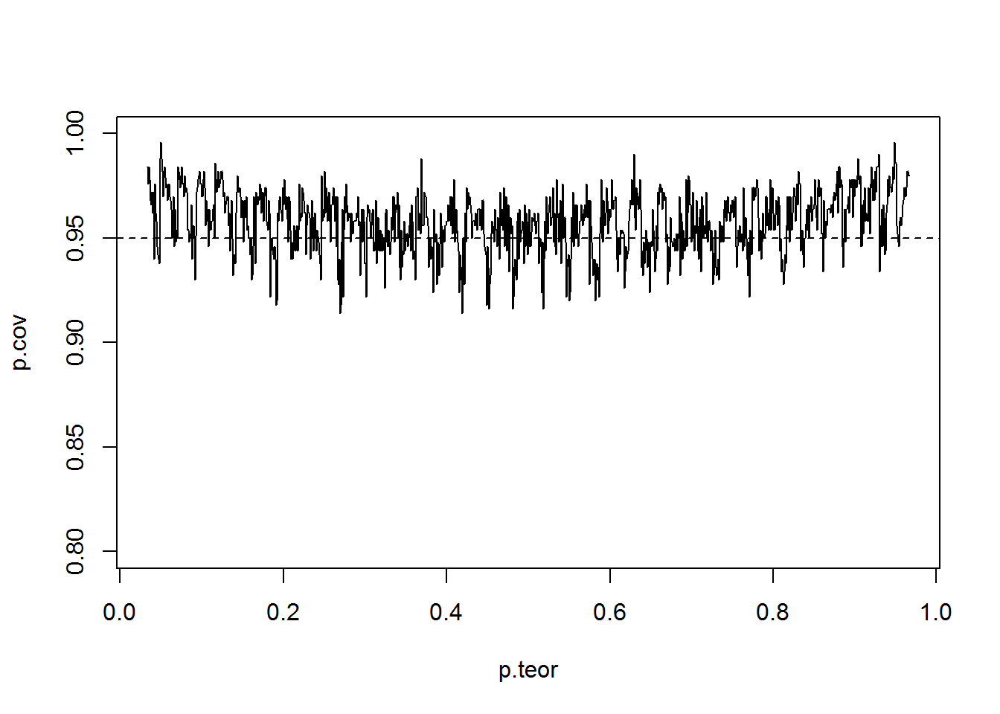
5.4 Contrastes de hipótesis
En el tema 2 se propuso el análisis de la bondad de ajuste de un generador de números pseudo-aleatorios mediante el test de Kolmogorov-Smirnov. Sin embargo, si \(H_{0}\) es compuesta (los parámetros desconocidos se estiman por máxima verosimilitud y se trabaja con \(\hat{F}_{0}\)) los cuantiles de la distribución (asintótica) de \(D_{n}\) pueden ser demasiado conservativos y sería preferible utilizar la distribución exacta.
- Analizar el comportamiento del contraste de Kolmogorov-Smirnov para contrastar normalidad empleando repetidamente este test, considerando 1000 pruebas con muestras de tamaño 30 de una \(\mathcal{N}(0,1)\). Comparar gráficamente el ajuste de la distribución del \(p\)-valor a la de referencia (estudiar el tamaño del contraste).
Valores iniciales:
set.seed(54321)
nx <- 30
mx <- 0
sx <- 1
nsim <- 1000
estadistico <- numeric(nsim)
pvalor <- numeric(nsim)Realizar contrastes
for(isim in 1:nsim) {
rx <- rnorm(nx, mx, sx)
tmp <- ks.test(rx, "pnorm", mean(rx), sd(rx))
estadistico[isim] <- tmp$statistic
pvalor[isim] <- tmp$p.value
}Proporción de rechazos:
{
cat("\nProporción de rechazos al 1% =", mean(pvalor < 0.01), "\n")
cat("Proporción de rechazos al 5% =", mean(pvalor < 0.05), "\n")
cat("Proporción de rechazos al 10% =", mean(pvalor < 0.1), "\n")
}##
## Proporción de rechazos al 1% = 0
## Proporción de rechazos al 5% = 0
## Proporción de rechazos al 10% = 0.001Análisis de los p-valores:
hist(pvalor, freq=FALSE)
abline(h=1, lty=2) # curve(dunif(x,0,1), add=TRUE)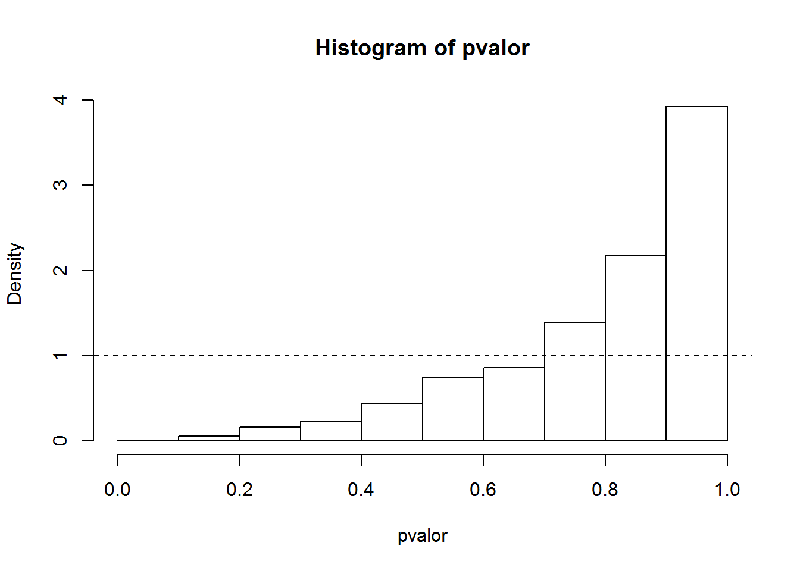
# Distribución empírica
curve(ecdf(pvalor)(x), type = "s", lwd = 2,
main = 'Tamaño del contraste', ylab = 'Proporción de rechazos',
xlab = 'Nivel de significación')
abline(a=0, b=1, lty=2) # curve(punif(x, 0, 1), add = TRUE)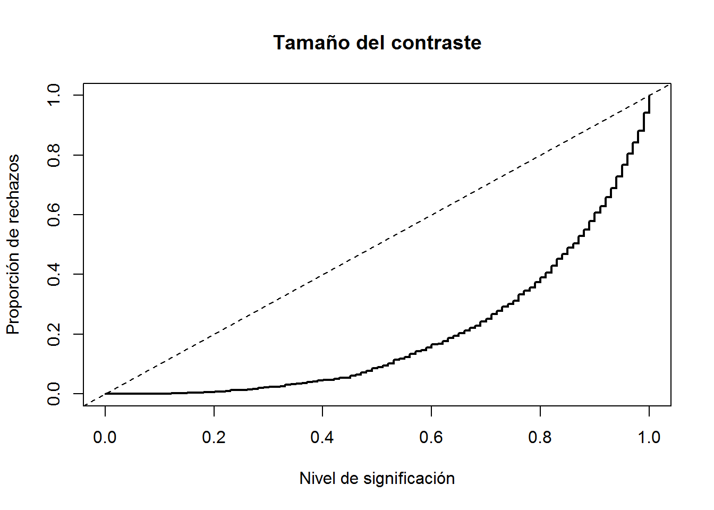
- Repetir el apartado anterior considerando el test de Lilliefors (rutina
lillie.testdel paquetenortest).
library(nortest, quietly = TRUE)Valores iniciales:
set.seed(54321)
nx <- 30
mx <- 0
sx <- 1
nsim <- 1000
estadistico <- numeric(nsim)
pvalor <- numeric(nsim)Realizar contrastes
for(isim in 1:nsim) {
rx <- rnorm(nx, mx, sx)
# tmp <- ks.test(rx, "pnorm", mean(rx), sd(rx))
tmp <- lillie.test(rx)
estadistico[isim] <- tmp$statistic
pvalor[isim] <- tmp$p.value
}Proporción de rechazos:
{
cat("\nProporción de rechazos al 1% =", mean(pvalor < 0.01), "\n")
cat("Proporción de rechazos al 5% =", mean(pvalor < 0.05), "\n")
cat("Proporción de rechazos al 10% =", mean(pvalor < 0.1), "\n")
}##
## Proporción de rechazos al 1% = 0.01
## Proporción de rechazos al 5% = 0.044
## Proporción de rechazos al 10% = 0.089Análisis de los p-valores:
hist(pvalor, freq=FALSE)
abline(h=1, lty=2) # curve(dunif(x,0,1), add=TRUE)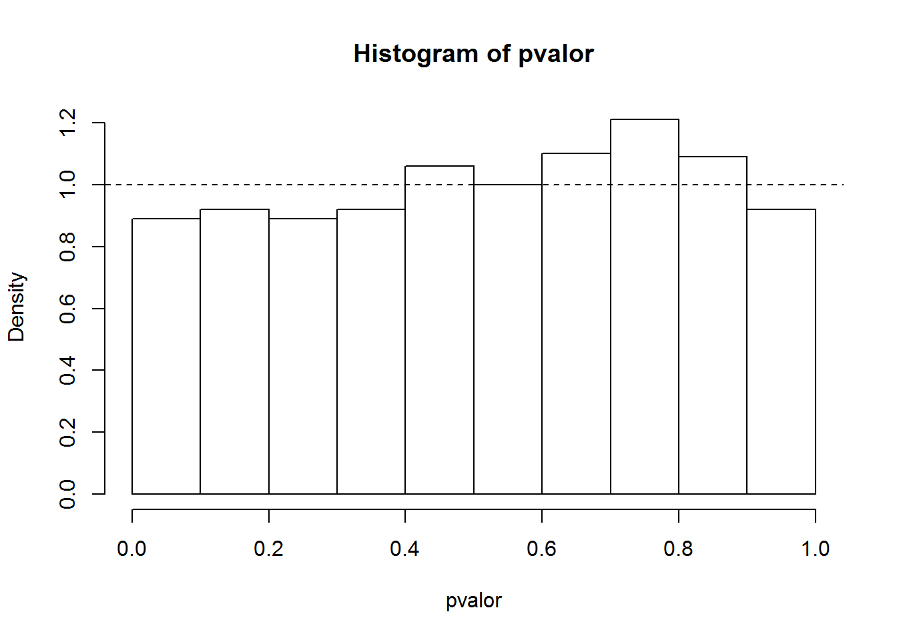
# Distribución empírica
curve(ecdf(pvalor)(x), type = "s", lwd = 2,
main = 'Tamaño del contraste', ylab = 'Proporción de rechazos', xlab = 'Nivel de significación')
abline(a=0, b=1, lty=2) # curve(punif(x, 0, 1), add = TRUE)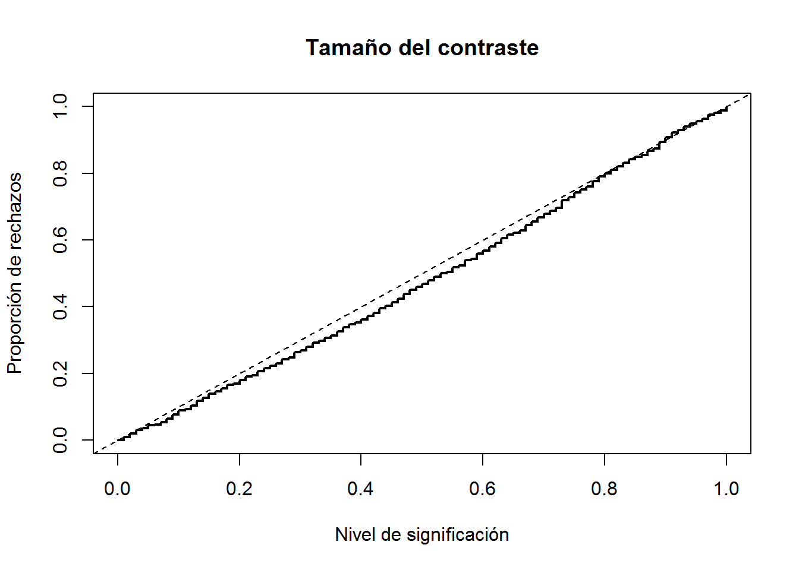
- Repetir el apartado a) contrastando una distribución exponencial y considerando 500 pruebas con muestras de tamaño 30 de una \(Exp(1)\).
Valores iniciales:
set.seed(54321)
nx <- 30
ratex <- 1
nsim <- 500
estadistico <- numeric(nsim)
pvalor <- numeric(nsim)Realizar contrastes
for(isim in 1:nsim) {
rx <- rexp(nx, ratex)
tmp <- ks.test(rx, "pexp", 1/mean(rx))
estadistico[isim] <- tmp$statistic
pvalor[isim] <- tmp$p.value
}Proporción de rechazos:
{
cat("\nProporción de rechazos al 1% =", mean(pvalor < 0.01), "\n")
cat("Proporción de rechazos al 5% =", mean(pvalor < 0.05), "\n")
cat("Proporción de rechazos al 10% =", mean(pvalor < 0.1), "\n")
}##
## Proporción de rechazos al 1% = 0
## Proporción de rechazos al 5% = 0.004
## Proporción de rechazos al 10% = 0.008Análisis de los p-valores:
hist(pvalor, freq=FALSE)
abline(h=1, lty=2) # curve(dunif(x,0,1), add=TRUE)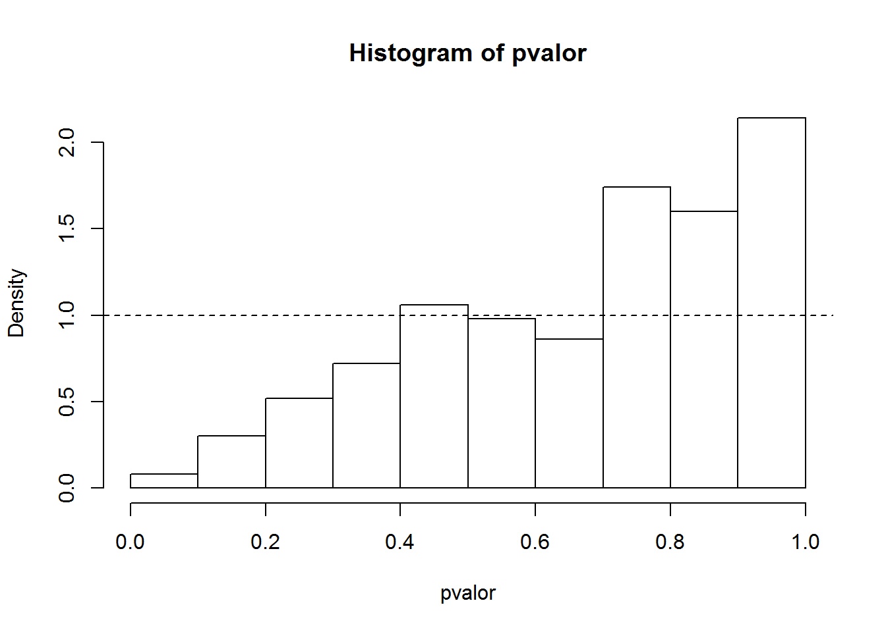
# Distribución empírica
curve(ecdf(pvalor)(x), type = "s", lwd = 2,
main = 'Tamaño del contraste', ylab = 'Proporción de rechazos',
xlab = 'Nivel de significación')
abline(a=0, b=1, lty=2) # curve(punif(x, 0, 1), add = TRUE) 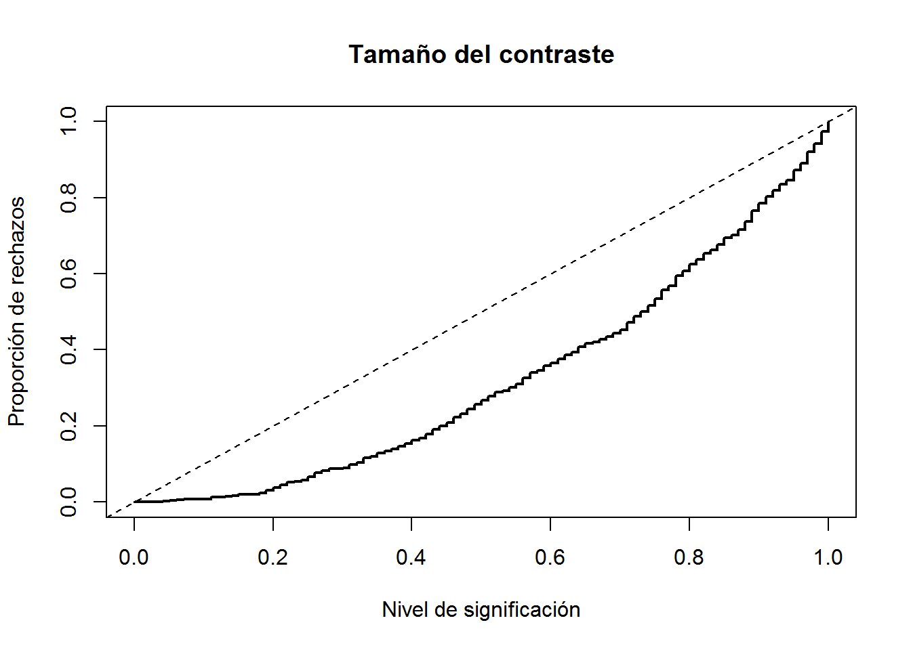
- Diseñar una rutina que permita realizar el contraste KS de bondad de ajuste de una variable exponencial aproximando el \(p\)-valor por simulación y repetir el apartado anterior empleando esta rutina.
ks.exp.sim <- function(x, nsim = 10^3) {
DNAME <- deparse(substitute(x))
METHOD <- "Kolmogorov-Smirnov Test of pexp by simulation"
n <- length(x)
RATE <- 1/mean(x)
ks.exp.stat <- function(x, rate=1/mean(x)) {
DMinus <- pexp(sort(x), rate=rate) - (0:(n - 1))/n
DPlus <- 1/n - DMinus
Dn = max(c(DMinus, DPlus))
}
STATISTIC <- ks.exp.stat(x, rate = RATE)
names(STATISTIC) <- "Dn"
# PVAL <- 0
# for(i in 1:nsim) {
# rx <- rexp(n, rate = RATE)
# if (STATISTIC <= ks.exp.stat(rx)) PVAL <- PVAL+1
# }
# PVAL <- PVAL/nsim
# PVAL <- PVAL/(nsim + 1)
# PVAL <- (PVAL + 1)/(nsim + 2)
rx <- matrix(rexp(n*nsim, rate = RATE), ncol=n)
PVAL <- mean(STATISTIC <= apply(rx, 1, ks.exp.stat))
return(structure(list(statistic = STATISTIC, alternative = "two.sided",
p.value = PVAL, method = METHOD, data.name = DNAME),
class = "htest"))
}Simulación:
set.seed(54321)
nx <- 30
ratex <- 1
nsim <- 500
estadistico <- numeric(nsim)
pvalor <- numeric(nsim)Realizar contrastes
for(isim in 1:nsim) {
rx <- rexp(nx, ratex)
# tmp <- ks.test(rx, "pexp", 1/mean(rx))
tmp <- ks.exp.sim(rx, nsim = 200)
estadistico[isim] <- tmp$statistic
pvalor[isim] <- tmp$p.value
}Proporción de rechazos:
{
cat("\nProporción de rechazos al 1% =", mean(pvalor < 0.01), "\n")
cat("Proporción de rechazos al 5% =", mean(pvalor < 0.05), "\n")
cat("Proporción de rechazos al 10% =", mean(pvalor < 0.1), "\n")
}##
## Proporción de rechazos al 1% = 0.008
## Proporción de rechazos al 5% = 0.058
## Proporción de rechazos al 10% = 0.106Análisis de los p-valores:
hist(pvalor, freq=FALSE)
abline(h=1, lty=2) # curve(dunif(x,0,1), add=TRUE)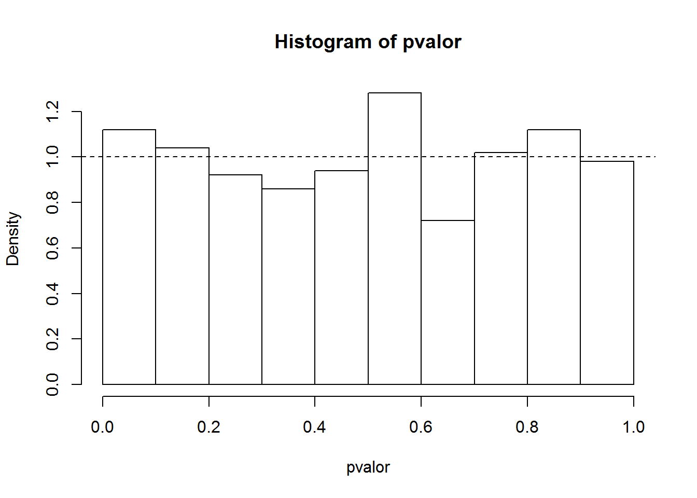
# Distribución empírica
curve(ecdf(pvalor)(x), type = "s", lwd = 2,
main = 'Tamaño del contraste', ylab = 'Proporción de rechazos',
xlab = 'Nivel de significación')
abline(a=0, b=1, lty=2) # curve(punif(x, 0, 1), add = TRUE) 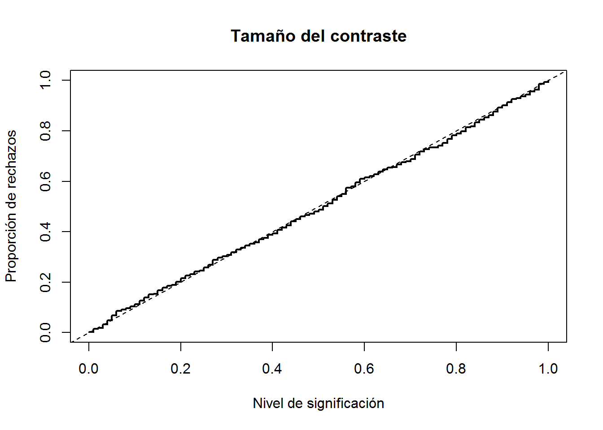
- Estudiar la potencia de los contrastes de los apartados c) y d), considerando como alternativa una distribución Weibull.
La distribución exponencial es un caso particular de la Weibull: dexp(x, ratex) == dweibull(x, 1, 1/ratex). Estudiamos lo que ocurre al desplazar dweibull(x, shape, 1/ratex) con 0 < shape < 2.
CUIDADO: las simulaciones pueden requerir de mucho tiempo de computación (consideramos valores pequeños de nx y nsim en datos y en ks.exp.sim).
set.seed(54321)
nx <- 20
ratex <- 1 # Puede ser interesante representarlo variando rate
nsim <- 200
alfa <- 0.1 # Puede ser interesante representarlo variando alfa
shapex <- seq(0.25, 1.75, len=21)
preject <- numeric(length(shapex)) # Porporciones de rechazos con ks.test
ks.test.p <- function(x) ks.test(x, "pexp", 1/mean(x))$p.value
preject2 <- preject # Porporciones de rechazos con ks.exp.sim
ks.exp.sim.p <- function(x) ks.exp.sim(x, 200)$p.value
for (i in seq_along(shapex)) {
rx <- matrix(rweibull(nx*nsim, shape = shapex[i], scale = 1/ratex), ncol=nx)
preject[i] <- mean( apply(rx, 1, ks.test.p) <= alfa )
preject2[i] <- mean( apply(rx, 1, ks.exp.sim.p) <= alfa )
}
plot(shapex, preject, type="l", main = paste("Potencia del contraste ( alfa =", alfa, ")"),
xlab = "shape", ylab = "Proporción de rechazos")
lines(shapex, preject2, lty = 2)
abline(h = alfa, v = 1, lty = 3)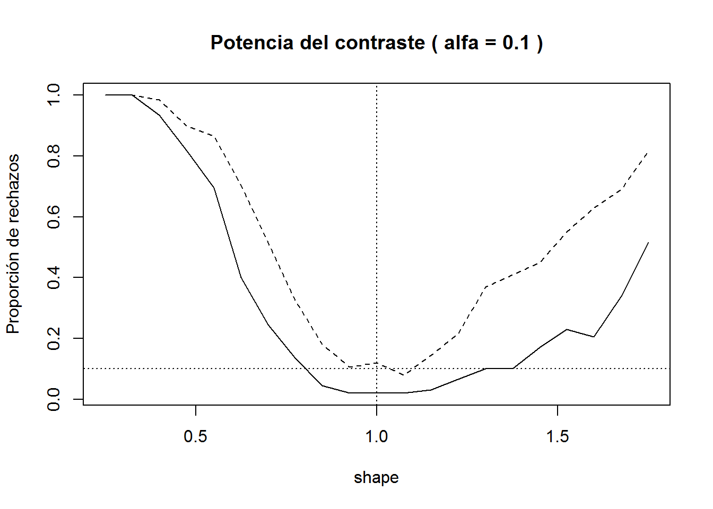
5.5 Comparación de estimadores
Supongamos que estamos interesados en estudiar el efecto de datos atípicos en la estimación de la media y de la mediana. Consideramos una v.a. con distribución normal contaminada, en la que una observación procede de una \(N(0,1)\) con probabilidad 0.95 y de una \(N(3,3^2)\) con probabilidad 0.05 (mixtura). Se puede generar una muestra de esta variable mediante los comandos:
p.sim <- rbinom(n, 1, 0.05)
dat.sim <- rnorm(n, 3*p.sim, 1+2*p.sim)Función de densidad:
curve(0.95*dnorm(x, 0, 1) + 0.05*dnorm(x, 3, 3), -3, 13, ylab = 'f(x)')
curve(dnorm(x, 0, 1), add = TRUE, lty = 3)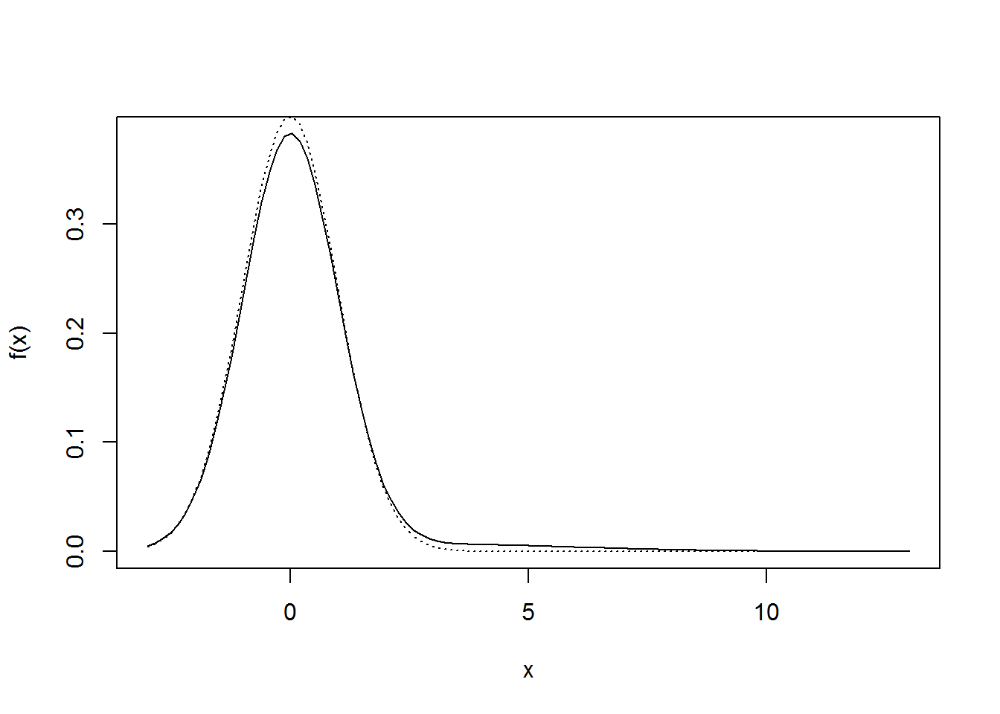
- Aproximar mediante simulación (500 generaciones) el sesgo y error estandar de la media y la mediana en el caso de una muestra de tamaño \(n=100\) (suponiendo que se pretende estimar la media no contaminada 0).
# media y mediana
xsd <- 1
xmed <- 0
ndat <- 100
nsim <- 500
# for (isim in 1:nsim) # evitar matrix y apply
set.seed(1)
ntsim <- ndat*nsim
p.sim <- rbinom(ntsim, 1, 0.05)
dat.sim <- rnorm(ntsim, 3*p.sim, 1+2*p.sim)
dat.sim <- matrix(dat.sim, ncol=nsim)Cada columna es una muestra
dat.sim[,1]## [1] 0.196562061 -0.419942692 1.163269540 -0.405755971 0.744098701
## [6] 0.476610571 0.541320049 0.610621794 0.058199506 0.778196530
## [11] 1.845466311 0.762380157 0.235252872 -0.153094268 -2.303784221
## [16] 0.305694818 -0.161943516 4.308629104 0.149177256 1.029315503
## [21] 1.170858694 0.950419709 0.069506571 0.240735091 0.859410656
## [26] 0.712231511 -1.422835468 -1.384827145 0.234677147 -0.080716383
## [31] -0.547488673 0.146213387 -0.068111798 0.848256028 0.750380551
## [36] -1.081404512 0.369325420 0.354818278 -0.009652750 -0.876200879
## [41] -0.028408218 -0.762112440 1.164225248 0.475244888 0.603328627
## [46] 1.675016050 -1.658518333 0.743926076 0.485889672 -1.188672379
## [51] 0.352357443 -0.007039027 -0.350304817 -0.881873963 1.198211993
## [56] -0.124834042 1.834799620 -0.798907092 0.559121337 1.474703088
## [61] 1.292524060 1.770138751 -1.112064572 0.692627114 0.363946337
## [66] -0.804760157 1.067903455 1.182083664 0.106025622 -1.007755068
## [71] 0.011728132 1.226832332 -0.001422142 -1.272307652 0.430236753
## [76] -0.244613030 -0.093350580 -0.819546535 -2.016538552 5.323444676
## [81] -0.200906391 -0.634235786 0.304042106 0.095836718 0.937605624
## [86] 0.458534075 1.141302604 1.274959366 -0.856441475 -2.042713860
## [91] 0.432273740 0.395935345 0.590817675 1.310925310 0.243082252
## [96] -0.743848789 -2.443538927 1.107184477 0.863190914 1.080970461hist(dat.sim[,1])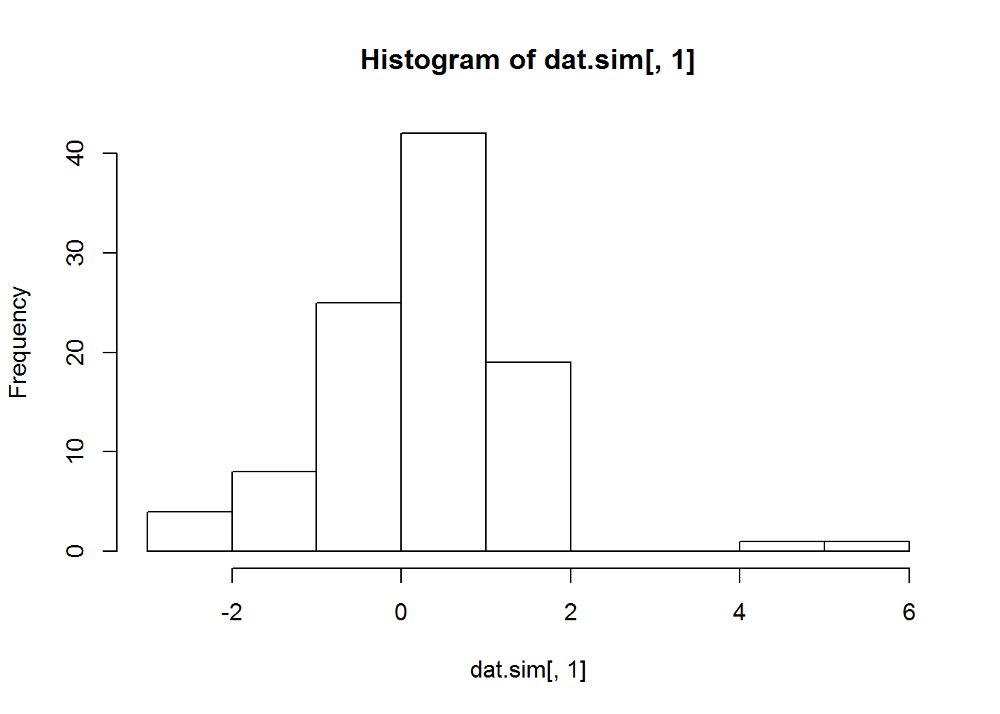
Calculo los estimadores
mean.sim <- apply(dat.sim, 2, mean)
median.sim <- apply(dat.sim, 2, median)Estimo sus características:
mean(mean.sim) # Coincide con el sesgo (media teórica es 0)## [1] 0.1459986sd(mean.sim)## [1] 0.1349537mean(median.sim) # Coincide con el sesgo (media teórica es 0)## [1] 0.04453509sd(median.sim)## [1] 0.1300611Sesgo
boxplot(mean.sim-xmed, median.sim-xmed,
names=c("Media","Mediana"), ylab="Sesgo")
abline(h = 0, lty = 2)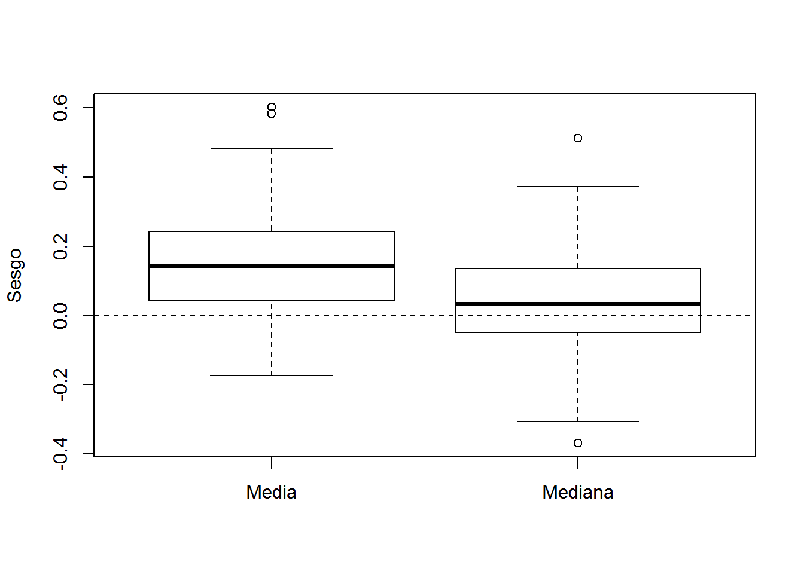
Error cuadrático
boxplot((mean.sim-xmed)^2, (median.sim-xmed)^2,
names=c("Media","Mediana"), ylab="Error cuadrático")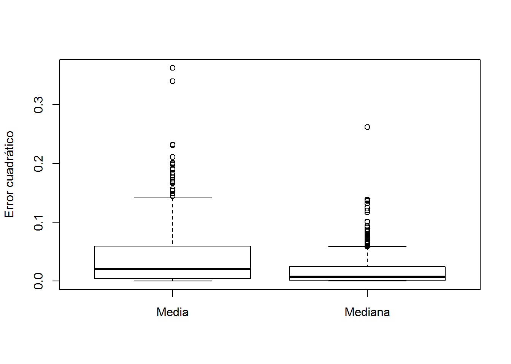
Estadísticos error cuadrático:
# SE media
summary((mean.sim-xmed)^2) ## Min. 1st Qu. Median Mean 3rd Qu. Max.
## 0.0000005 0.0045072 0.0206272 0.0394917 0.0591531 0.3619587# SE mediana
summary((median.sim-xmed)^2) ## Min. 1st Qu. Median Mean 3rd Qu. Max.
## 0.0000001 0.0016481 0.0070625 0.0188654 0.0243903 0.26183685.6 Remuestreo Bootstrap
5.6.1 Idea:
Consideramos un conjunto de datos simulado:
set.seed(1)
data <- runif(50)La idea es aproximar características poblacionales por las correspondientes de la distribución empírica de los datos observados:
# Distribución bootstrap
curve(ecdf(data)(x), ylab = "FD", type = "s", lwd = 2)
# Distribución teórica
abline(a = 0, b = 1, lty = 2) 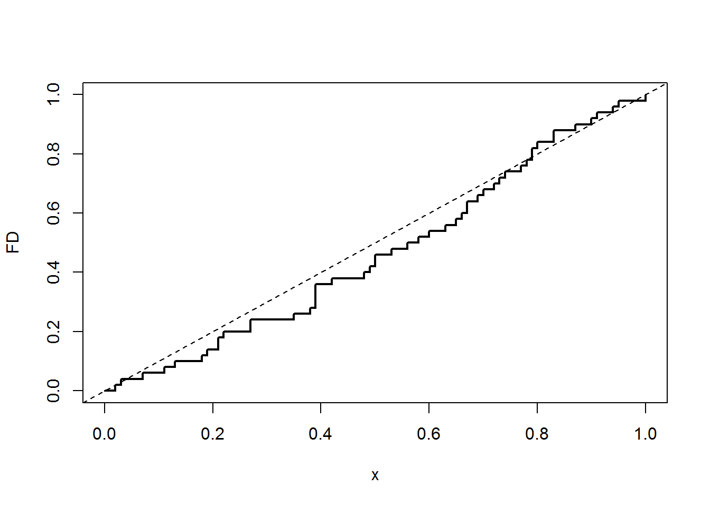
Las características de la distribución empírica se pueden aproximar mediante simulación. En el caso i.i.d. esto puede ser implementado mediante remuestreo, realizando repetidamente muestreo aleatorio con reemplazamiento del conjunto de datos original (manteniendo el tamaño muestral):
# Muestra bootstrap
xboot <- sample(data, replace=TRUE)5.6.2 Métodos de remuestreo Bootstrap
Método de remuestreo (Efron, 1979) utilizado para aproximar características de la distribución en el muestreo de un estadístico:
Aproximación del sesgo y de la varianza.
Construcción de intervalos de confianza
Realizar contrastes de hipótesis.
De utilidad cuando no se dispone la distribución exacta, no es adecuado emplear la distribución asintótica, etc. La idea es aproximar características poblacionales por las correspondientes de la distribución empírica de los datos observados. En el caso i.i.d. esto puede ser implementado mediante remuestreo, realizando repetidamente muestreo aleatorio con reemplazamiento del conjunto de datos original (manteniendo el tamaño muestral).
Si \(\mathbf{x} = \left( x_{1},x_{2},\cdots ,x_{n}\right) ^{t}\) es una muestra i.i.d. \(F_{\theta }\) y \(\hat{\theta} = T\left( \mathbf{x} \right)\) es un estimador de \(\theta\). Para \(b = 1,\ldots ,B:\)
\(\mathbf{x}_{b}^{\ast } = \left( x_{b1}^{\ast },x_{b2}^{\ast },\cdots ,x_{bn}^{\ast }\right) ^{t}\) muestra bootstrap obtenida mediante muestreo con reemplazamiento de \(\left\{ x_{1},x_{2},\cdots ,x_{n}\right\}\).
\(\hat{\theta}_{b}^{\ast } = T\left( \mathbf{x}_{b}^{\ast }\right)\) valor del estadístico en la muestra bootstrap.
La idea original (bootstrap natural, Efron) es que la variabilidad de \(\hat{\theta}_{b}^{\ast }\) en torno a \(\hat{\theta}\) aproxima la variabilidad de \(\hat{\theta}\) en torno a \(\theta\):
- La distribución de \(\hat{\theta}_{b}^{\ast }-\hat{\theta}\) aproxima la distribución de \(\hat{\theta}-\theta\).
En general podríamos decir que:
- la muestra es a la población lo que la muestra bootstrap es a la muestra.

Para información adicional sobre bootstrap ver p.e.: Davison, A.C. and Hinkley, D.V. (1997). Bootstrap Methods and Their Application. Cambridge University Press
5.6.3 Ejemplo
Como ejemplo consideraremos una muestra de tamaño \(n=100\) de una normal estandar para tratar de aproximar el sesgo y error estandar de la media y la mediana mediante bootstrap.
# dat <- dat.sim[, 1]
set.seed(54321)
ndat <- 100
datmed <- 0
datsd <- 1
dat <- rnorm(ndat, mean=datmed, sd=datsd)Consideramos 1000 réplicas bootstrap
nboot <- 1000 Es habitual tomar nboot+1 entero múltiplo de 100 e.g. nboot=999 ó 1999 (facilita el cálculo de percentiles, orden (nboot+1)*p)
Valor del estadístico en la muestra:
stat.dat <- mean(dat)Generación de las réplicas bootstrap:
set.seed(1)
stat.boot <- numeric(nboot)
for (i in 1:nboot) {
dat.boot <- sample(dat, replace=TRUE)
stat.boot[i] <- mean(dat.boot)
}
# Valor esperado bootstrap del estadístico
mean.boot <- mean(stat.boot)
mean.boot## [1] -0.09202607Bootstrap percentil:
hist(stat.boot, freq=FALSE, ylim = c(0,4))
abline(v=mean.boot, lwd=2)
# abline(v=stat.dat)
# Distribución poblacional
curve(dnorm(x, datmed, datsd/sqrt(ndat)), lty=2, add=TRUE)
abline(v=datmed, lwd=2, lty=2)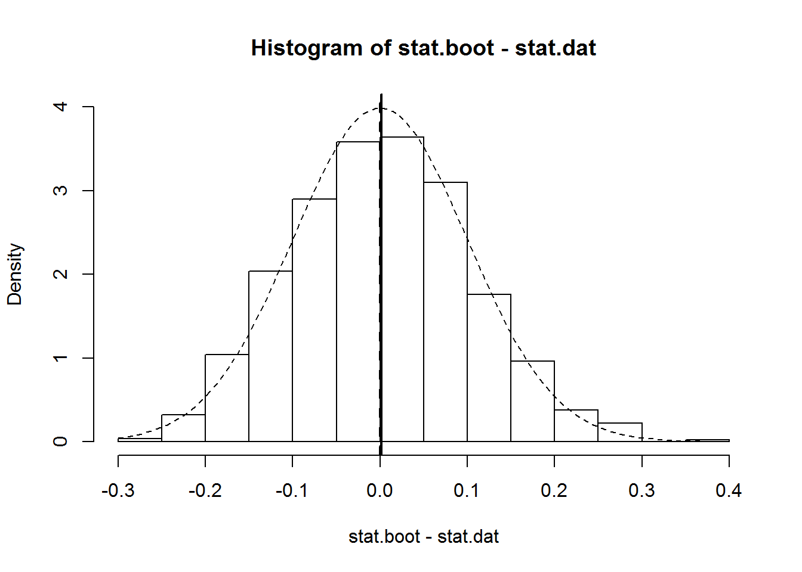
Bootstrap natural/básico:
hist(stat.boot-stat.dat, freq=FALSE, ylim = c(0,4))
abline(v=mean.boot-stat.dat, lwd=2)
# Distribución poblacional
# Distribución teórica de stat.dat - stat.teor
curve(dnorm(x, 0, datsd/sqrt(ndat)), lty=2, add=TRUE)
abline(v=0, lwd=2, lty=2)
Sesgo y error estandar bootstrap:
# sesgo (teor=0)
mean.boot - stat.dat ## [1] 0.00135433# error estandar
sd(stat.boot) ## [1] 0.1027024# error estandar teórico
datsd/sqrt(ndat) ## [1] 0.1Versión “optimizada” para R:
boot.strap <- function(dat, nboot=1000, statistic=mean)
{
ndat <- length(dat)
dat.boot <- sample(dat, ndat*nboot, replace=T)
dat.boot <- matrix(dat.boot, ncol=nboot, nrow=ndat)
stat.boot <- apply(dat.boot, 2, statistic)
}
fstatistic <- function(dat){
# mean(dat)
mean(dat, trim=0.2)
# median(dat)
# max(dat)
}
set.seed(1)
stat.dat <- fstatistic(dat)
stat.boot <- boot.strap(dat, nboot, fstatistic)
res.boot <- c(stat.dat, mean(stat.boot)-stat.dat, sd(stat.boot))
names(res.boot) <- c("Estadístico", "Sesgo", "Err.Std")
res.boot## Estadístico Sesgo Err.Std
## -0.144801929 0.006044904 0.1179781835.6.4 Paquetes R: bootstrap, boot
library(boot)
# ?bootFunción estadístico:
boot.f <- function(data, indices){
# data[indices] va a ser las muestras bootstrap
mean(data[indices])
}Generación de las muestras
set.seed(1)
stat.boot <- boot(dat, boot.f, nboot)
stat.boot##
## ORDINARY NONPARAMETRIC BOOTSTRAP
##
##
## Call:
## boot(data = dat, statistic = boot.f, R = nboot)
##
##
## Bootstrap Statistics :
## original bias std. error
## t1* -0.0933804 0.00135433 0.105385names(stat.boot)## [1] "t0" "t" "R" "data" "seed"
## [6] "statistic" "sim" "call" "stype" "strata"
## [11] "weights"5.6.5 Gráficos
hist(stat.boot$t, freq=FALSE)
plot(stat.boot)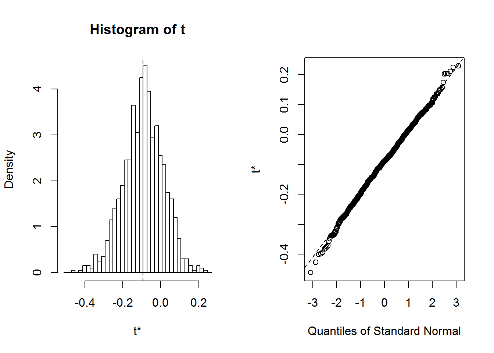
jack.after.boot(stat.boot)
5.6.6 Intervalos de confianza bootstrap
boot.ci(stat.boot, type=c("norm", "basic", "perc", "bca"))## BOOTSTRAP CONFIDENCE INTERVAL CALCULATIONS
## Based on 1000 bootstrap replicates
##
## CALL :
## boot.ci(boot.out = stat.boot, type = c("norm", "basic", "perc",
## "bca"))
##
## Intervals :
## Level Normal Basic
## 95% (-0.3013, 0.1118 ) (-0.2900, 0.1212 )
##
## Level Percentile BCa
## 95% (-0.3079, 0.1032 ) (-0.3258, 0.0973 )
## Calculations and Intervals on Original ScaleRepetir el ejemplo anterior considerando la media recortada al 10% (ejemplo con parámetros adicionales).
boot.f <- function(data, indices, trim=0.1){
mean(data[indices], trim)
}
set.seed(1)
boot(dat, boot.f, nboot, trim=0.2)##
## ORDINARY NONPARAMETRIC BOOTSTRAP
##
##
## Call:
## boot(data = dat, statistic = boot.f, R = nboot, trim = 0.2)
##
##
## Bootstrap Statistics :
## original bias std. error
## t1* -0.1448019 0.005146914 0.1226472En el tema 2 se propuso el análisis de la aleatoriedad de un generador de números pseudo-aleatorios mediante el test de rachas, que se podría implementar repetidamente. Sin embargo, la aproximación asintótica empleada por la rutina runs.test de la librería tseries no es adecuada para tamaños muéstrales pequeños (\(n<40\)) y sería preferible utilizar la distribución exacta (o por lo menos utilizar una corrección por continuidad).
Analizar el comportamiento del contraste empleando repetidamente el test de rachas, considerando 500 pruebas con muestras de tamaño 10 de una \(Bernoulli(0.5)\). ¿Se observa algo extraño?
Realiza un programa que permita aproximar por simulación la función de masa de probabilidad del estadístico número de rachas (a partir de valores de una \(Bernoulli(0.5)\)). Representarla gráficamente y compararla con la densidad normal. Obtener los puntos críticos para contrastar la hipótesis nula de aleatoriedad para \(\alpha=0.01,0.05\) y \(0.1\). ¿Es esta dístribución adecuada para el contraste de aleatoriedad de variables continuas?¿Cual debería ser la probabilidad de obtener una única racha al aplicar el test a una variable continua?
Diseñar una rutina que permita realizar el contraste de aleatoriedad de una variable continua aproximando el \(p\)-valor por simulación. Asumir que la distribución del estadístico puede ser asimétrica, en cuyo caso el \(p\)-valor \(p=2\min\left\{ P\left( R\leq\hat{R}\mid H_{0}\right) , P\left( R\geq \hat{R}\mid H_{0}\right) \right\}\).
Diseñar una rutina que permita realizar el contraste de aleatoriedad de una variable continua aproximando el \(p\)-valor mediante bootstrap.